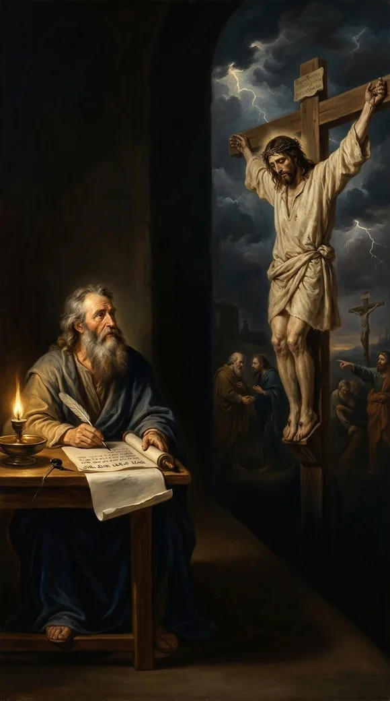
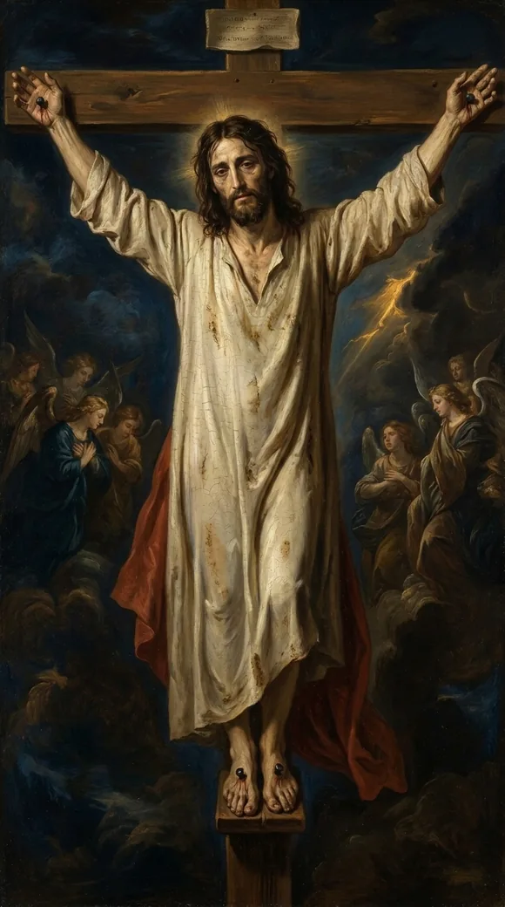
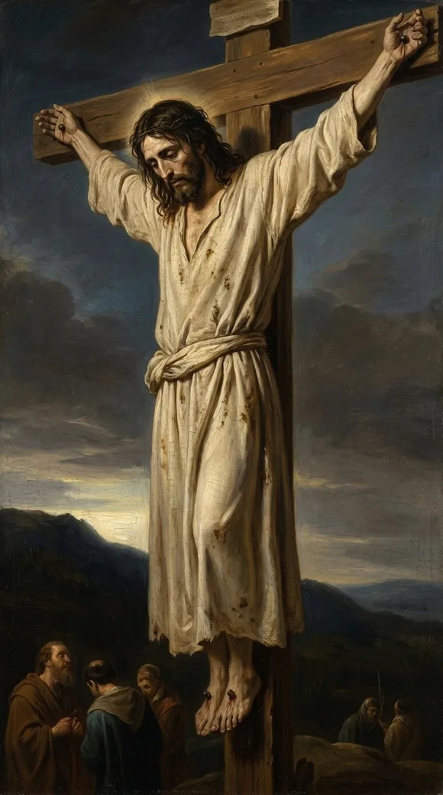

Video will be on YouTube when the series launches.
David wrote the mockers' gesture and their taunt. Matthew records both at the cross.
The study behind this
Psalm 22 is a cry of King David, set down roughly a thousand years before Christ. It opens in the voice of a man surrounded and abandoned, then bends, line by line, toward a suffering David himself never endured and a rescue that reaches the ends of the earth.
...they shake the head, saying, He trusted on the LORD that he would deliver him: let him deliver him...
Psalm 22:7-8
He trusted in God; let him deliver him now...
Matthew 27:43
The reading

At the cross they shook their heads and sneered the very taunt a psalm had recorded a thousand years before.
Psalm twenty-two. David, describing a mocked and dying man, even writes his tormentors' words:
...they shake the head, saying, He trusted on the LORD that he would deliver him: let him deliver him...
Psalm 22:7-8
A thousand years later, at the cross, Matthew records both, the passers-by wagging their heads, and the religious leaders jeering:
He trusted in God; let him deliver him now...
Matthew 27:43
The same gesture. The same taunt, flung at Him by people who never saw what they were echoing.

"Let him deliver him," they sneered. And He wasn't delivered, not because Jesus lacked the power to come down; He had every power. He stayed because staying was the only way to deliver you.

They thought weakness pinned Him to that cross. It was love. He could have come down in an instant, He chose to stay, with you in view.
Every quotation is the King James Version, verified word for word against the text.